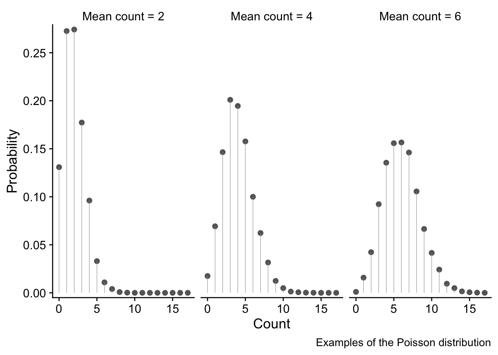
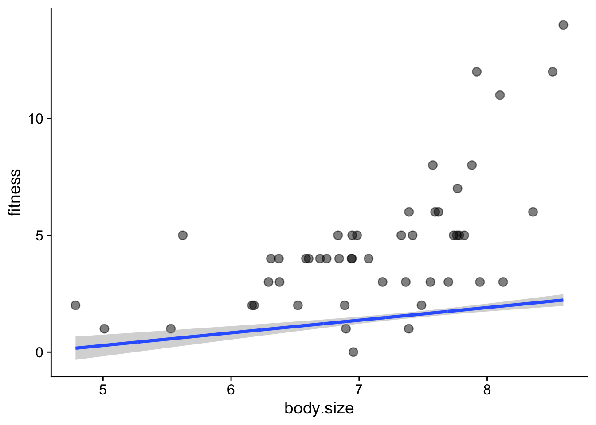
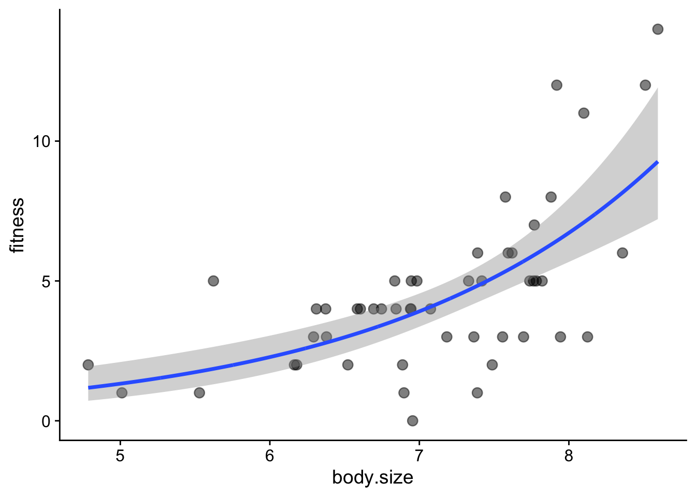

13 GLM poisson with count data
This exercise is taken from Chapter 7 of Beckerman, Childs and Petchey: Getting Started with R
We study variation of number of offspring of Soay sheep with mother’s body weight. These are count data. They are not normally distributed since they are discrete and bounded by zero - a ewe cannot have a negative number of births. Moreover, the variance of the data set is not constant - the spread of values tends to increase the more offspring a ewe has. This is common (but not universal) with count data.
13.1 Preliminaries
Load packages
Load sheep data
filepath <- here("data", "soay_sheep_fitness.csv")
soay <- read_csv(filepath)
# check its structure
glimpse(soay)Rows: 50
Columns: 2
$ fitness <dbl> 4, 3, 2, 14, 5, 2, 2, 5, 8, 4, 12, 6, 3, 2, 3, 0, 5, 3, 5, 6…
$ body.size <dbl> 6.373546, 7.183643, 6.164371, 8.595281, 7.329508, 6.179532, …Make the first plot to explore the data
soay |>
ggplot(aes(x = body.size, y = fitness)) +
geom_point() +
geom_smooth(method = 'lm', se = FALSE, linewidth = 0.5) +
xlab('Body mass (kg)') +
ylab('Lifetime fitness') +
theme_cowplot()
A few things stand out from this plot:
- There is a clear trend: as the ewe’s body mass increases, so does the number of offspring tend to increase. That makes sense: a heavier ewe would have more resources to support one lamb after another.
- The trend is not linear. There is a clear upwards curve.
- The spread of values increases as the mother’s body mass increases. This is common with count data.
- There are no negative response values - while a ewe could have no lambs, it definitely cannot have a negative number of lambs.
13.2 The wrong way to analyse the data - do a linear model
We should have an inkling that this is the wrong way since the variation of offspring with body weight is clearly not linear!
For insight, let’s do it anyway using lm(), and look at the diagnostic plots we get when we give the resulting model soay.linear to autoplot()
soay.linear <- lm(fitness ~ body.size, data = soay)13.2.1 Diagnostic plots of linear model
autoplot(soay.linear, smooth.colour = NA) + theme_cowplot()
These plots show us that these data violate all the properties required of data before they can be sensibly analysed using a linear model.
13.2.1.1 Top-left: residuals vs fitted values
This has a clear U-shape, when, for a linear model to be appropriate, there should be no systematic pattern. This is a consequence of trying to fit a straight lines through a data cloud that has a clear non-linear trend. We underestimate fitness at small body sizes, then over-estimate at middling body sizes and finally underestimate it again at the largest body sizes
13.2.1.2 Top-right: the normal Q-Q plot
This is not right: for a linear model to be valid the points should be scattered around a straight line. Here, there is systematic deviation from that at both ends, in a way that indicates over-dispersion of the residuals compared to what they would be if they were normally distributed see this for an explanation of Q-Qplots. Over dispersion means bring more spread out, in particular with thicker tails, than would be the case with normally distributed data.
13.2.1.3 Bottom left: Scale location plot
This plot shows us that there is a positive relationship between the absolute size of the residuals and the fitted values. This reflects the increasing vertical spread of the data. For a linear model to be appropriate, the spread of residuals values should be approximately constant across the whole range of fitted values.
13.2.1.4 Bottom-right: residuals leverage plot
This is actually not too bad. There are no obvious outliers, so no single poiunt will have an undue influence on the analysis.
However, one out four is not good enough, as Meatloaf didn’t quite say. The linear model clearly does not do a very good job of describing the data, so we need a different approach.
13.3 The right way - using a GLM
The linear model is based on the errors of the data being normally distributed, but this is very often not the case for count data, for at least these obvious reasons:
- The normal; distribution concerns continuous variables that may be fractional, whereas count data are discrete 0, 1, 2… Ewes cannot give birth to 2.5 offspring.
- The normal distribution allows negative values, whereas count data cannot be negative. They can be zero, but not negative. You can’t find -2 limpets in a quadrat, witness -3 instances of a behaviour or give birth to -1 offspring!
- The normal distribution is symmetrical whereas count data very often are not symmetrically distributed, in part because negative values are not possible but occasional very large values are.
Hence, the normal distribution is just not a very good model for many kinds of count data. The Poisson distribution, on the other hand is a good starting point for the analysis of certain kinds of count data. We mean by that the kind where, while we may know how often something did happen, we do not know how often it did not happen, and where occasional large count values are possible ie there is no upper bound to possible count values. This might include, say, counting meiofauna on a microscope slide, offspring (!), goals per game in football, decays per given time interval in a radioactive sample, mutations per unit length in a strand of DNA, and many, many more.
Instances where we do also know how often something did not happen, as well as how often it did, such as the occupancy or not among a fixed total of nest boxes, are best analysed as proportion data using the binomial distribution. This can also be handled within a GLM framework, but we shall not discuss it here.
In case you want to know, here is the mathematical form of the Poisson distribution for a random non-negative, discrete variable x that is distributed according to this distribution. It is specified entirely by its mean value \lambda, which is also the value of its variance. Hence, the variance increases with the mean.
P(x) = \frac{e^{-\lambda}\lambda^x}{x!}
We won’t here go into the details of the Poisson distribution, but will limit ourselves to presenting three examples of it, for mean count values of 2, 4 and 6. The x axes show the range of possible counts, and the y axis shows the probability of each value.
These examples illustrate why the Poisson distribution is a good choice for use with unbounded (That is, no upper bound. There is a bound of zero at the lower end) count data since it overcomes all the issues discussed above:
- only discrete values 0, 1, 2,… are possible. These are bounded at zero. High count values are possible but are increasingly unlikely.
- the variance of the the distribution increases as the mean value increases - in fact, the variance and the mean are equal. We see this as a fattening of the distribution as the mean count value increases.

soay.glm <- glm(fitness ~ body.size, data = soay, family = poisson(link = log))
autoplot(soay.glm, smooth.colour = NA) + theme_cowplot()
These are much better than they were with the linear model. The autoplot() function ensures that these will look right if the error distribution of the model does indeed follow a Poisson distribution.
13.4 Interpret the GLM
To do this we use the same anova() and summary() functions that we are used to suing with lm(). For something produced by lm(), anova() produces an ANOVA table, but for someting produced by glm() it produces an Analysis of Deviance table.
# use anova() and summary() to interpret the model
anova(soay.glm) # sequential sums of squares tableAnalysis of Deviance Table
Model: poisson, link: log
Response: fitness
Terms added sequentially (first to last)
Df Deviance Resid. Df Resid. Dev Pr(>Chi)
NULL 49 85.081
body.size 1 37.041 48 48.040 1.157e-09 ***
---
Signif. codes: 0 '***' 0.001 '**' 0.01 '*' 0.05 '.' 0.1 ' ' 1In GLMs
summary(soay.glm) # coefficients table
Call:
glm(formula = fitness ~ body.size, family = poisson(link = log),
data = soay)
Coefficients:
Estimate Std. Error z value Pr(>|z|)
(Intercept) -2.42203 0.69432 -3.488 0.000486 ***
body.size 0.54087 0.09316 5.806 6.41e-09 ***
---
Signif. codes: 0 '***' 0.001 '**' 0.01 '*' 0.05 '.' 0.1 ' ' 1
(Dispersion parameter for poisson family taken to be 1)
Null deviance: 85.081 on 49 degrees of freedom
Residual deviance: 48.040 on 48 degrees of freedom
AIC: 210.85
Number of Fisher Scoring iterations: 413.5 Remake the figure and add fitted line
Find min and max of the x data
Make the new.x values.
We use the ‘body.size’ variable name to name the column just as it is in the orginal data
new.x <- expand.grid(body.size = seq(min.size, max.size, length.out = 1000))Generate fits and standard errors
new.y <- predict(soay.glm, newdata = new.x, se.fit = TRUE)
new.y <- data.frame(new.y)
head(new.y) fit se.fit residual.scale
1 0.1661991 0.2541777 1
2 0.1682619 0.2538348 1
3 0.1703247 0.2534919 1
4 0.1723874 0.2531491 1
5 0.1744502 0.2528063 1
6 0.1765130 0.2524635 1Housekeeping to bring new.x and new.y together
addThese <- data.frame(new.x, new.y)
addThese <- rename(addThese, fitness = fit)
head(addThese) body.size fitness se.fit residual.scale
1 4.785300 0.1661991 0.2541777 1
2 4.789114 0.1682619 0.2538348 1
3 4.792928 0.1703247 0.2534919 1
4 4.796741 0.1723874 0.2531491 1
5 4.800555 0.1744502 0.2528063 1
6 4.804369 0.1765130 0.2524635 1Calculate confidence intervals and include them in addThese
addThese <- mutate(addThese,
lwr = fitness-1.96*se.fit,
upr = fitness +1.96*se.fit)Plot the final figure
ggplot(soay, aes(x = body.size, y = fitness)) +
# first show the raw data
geom_point(size = 3, alpha = 0.5) +
# now add the fit and confidence intervals
# we don't need to specify body.size and fitness as they are inherited from above
geom_smooth(data = addThese, aes(ymin = lwr, ymax = upr), stat = 'identity') +
theme_cowplot()
This did not work! We need to account for the link function. For a poisson model, this is the log(). Hence, the predictions are the log of the expected fitness. Here is the fix:
Start again with addThese
addThese <- data.frame(new.x, new.y)
# then:
addThese <- mutate(addThese,
fitness = exp(fit),
lwr = exp(fit-1.96*se.fit),
upr = exp(fit +1.96*se.fit))
head(addThese) body.size fit se.fit residual.scale fitness lwr upr
1 4.785300 0.1661991 0.2541777 1 1.180808 0.7174951 1.943300
2 4.789114 0.1682619 0.2538348 1 1.183246 0.7194600 1.946004
3 4.792928 0.1703247 0.2534919 1 1.185690 0.7214303 1.948712
4 4.796741 0.1723874 0.2531491 1 1.188138 0.7234059 1.951425
5 4.800555 0.1744502 0.2528063 1 1.190591 0.7253869 1.954141
6 4.804369 0.1765130 0.2524635 1 1.193050 0.7273732 1.956861Redo the final plot
ggplot(soay, aes(x = body.size, y = fitness)) +
# first show the raw data
geom_point(size = 3, alpha = 0.5) +
# now add the fit and confidence intervals
# we don't need to specify body.size and fitness as they are inherited from above
geom_smooth(data = addThese, aes(ymin = lwr, ymax = upr), stat = 'identity') +
theme_cowplot()